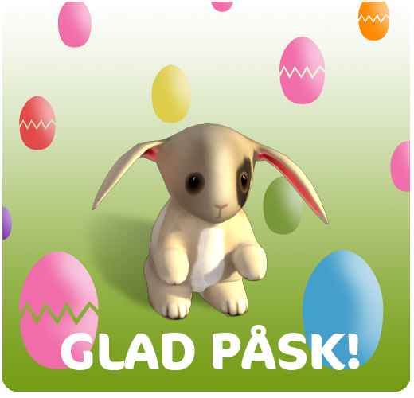

2012. április 04., szerda
Üdvözlet mindenkinek és boldog húsvétot!
Itt vannak a heti frissítések!

Új küldetés:
- Minimum 11.szint
- Ezen a héten egy régi ismerősödnek, Firgroveban szüksége van a segítségedre. Tyúkokat szeretne tartani, de nem tudja, honnan szerezzen tyúkokat és hol tartsa őket?
Új verseny:
- Minimum 11.szint
- Pár héttel ezelőtt egy kis nyuszi érkezett és letelepedett Landon, a juhász mezőjén, Silverglade falu mellett. Úgy tűnik, hogy a kis nyuszi unokatestvérei is megérkeztek, és úgy tűnik, hogy le kell futniuk magukat. Figyeljétek, hátha Landonnak szüksége van valamire, miközben a tyúkokat gondozzátok Firgrove-ban...
- Minka Firgrove mellett teljes gőzzel dolgozik az öreg, klasszikus – de rendkívül nehéz – erdei pálya felújításán. Sok éven át zárva volt, de Minka szerint valószínűleg jövő héten már készen lesz, de annyira nehéznek tűnik, hogy nem biztos benne, hogy a legjobb lovasok is képesek lesznek teljesíteni.
Ezen a héten is elvégeztünk néhány hibajavítást, egyéb módosítást, és a Star Stable továbbfejlesztése gyors ütemben halad!
Üdvözlettel:
a Star Stable csapata